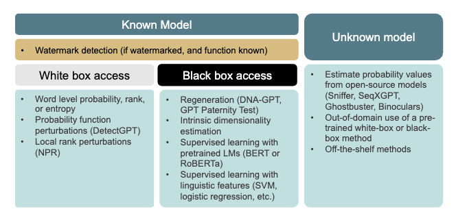

selected publications
Selected publications
For an up-to-date list, please see my Google Scholar page.
Associate Professor · School of Electrical Engineering and Computer Science · University of Ottawa
My research is in natural language processing and artificial intelligence with a focus on ethical AI and AI safety, including bias and fairness, social stereotypes, deception, manipulation, and model evaluation. A large part of my work also applies NLP to healthcare, detecting early signs of cognitive impairment from speech and language.
news
current projects
Feel free to get in touch for more information or possible collaboration.
Algorithms to automatically detect speech and language markers of cognitive or mental state.
Examining stereotyping and bias in social media text and in machine learning models.
Evaluating frontier and fine-tuned models for safety risks, and designing mitigations.
selected publications
For an up-to-date list, please see my Google Scholar page.
about
Dr. Kathleen Fraser is an Associate Professor in the School of Electrical Engineering and Computer Science at the University of Ottawa, where she investigates language technologies for healthcare and social good. Her recent research has focused on social and ethical issues in natural language processing, such as identifying stereotypes and implicitly abusive language in social media text, as well as improving the interpretability and transparency of machine learning models. She is also active in developing methods to help detect early signs of cognitive decline from speech patterns and eye movements.
Previously, Dr. Fraser worked as a Research Officer at the National Research Council of Canada. She received her PhD in Computer Science from the University of Toronto in 2016, under the supervision of Graeme Hirst and Jed Meltzer, and was awarded the Governor General’s Gold Academic Medal.
contact